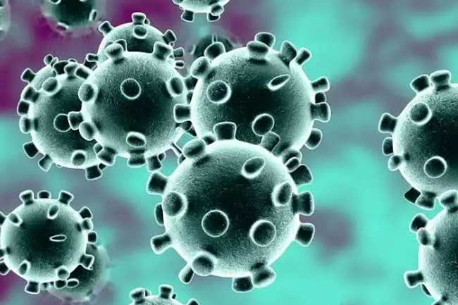

Virus Corona (COVID-19)
Infeksi virus Corona disebut COVID-19 dan pertama kali ditemukan di kota Wuhan, Cina, pada akhir Desember 2019. Virus ini menular dengan sangat cepat dan telah menyebar ke hampir semua negara, termasuk Indonesia, hanya dalam waktu beberapa bulan. Hal tersebut membuat beberapa negara menerapkan kebijakan untuk memberlakukan lockdown dalam rangka mencegah penyebaran virus Corona. Di Indonesia sendiri, diberlakukan kebijakan Pembatasan Sosial Berskala Besar (PSBB) untuk menekan penyebaran virus ini.Coronavirus adalah kumpulan virus yang bisa menginfeksi sistem pernapasan. Pada banyak kasus, virus ini hanya menyebabkan infeksi pernapasan ringan, seperti flu. Namun, virus ini juga bisa menyebabkan infeksi pernapasan berat, seperti infeksi paru-paru (pneumonia).Selain virus SARS-CoV-2 atau virus Corona, virus yang juga termasuk dalam kelompok ini adalah virus penyebab Severe Acute Respiratory Syndrome (SARS) dan virus penyebab Middle-East Respiratory Syndrome (MERS). Meski disebabkan oleh virus dari kelompok yang sama, yaitu coronavirus, COVID-19 memiliki beberapa perbedaan dengan SARS dan MERS, antara lain dalam hal kecepatan penyebaran dan keparahan gejala.
Gejala Virus Corona (COVID-19)
Gejala awal infeksi virus Corona atau COVID-19 bisa menyerupai gejala flu, yaitu demam, pilek, batuk kering, sakit
tenggorokan, dan sakit kepala. Setelah itu, gejala dapat hilang dan sembuh atau malah memberat. Penderita dengan gejala yang berat bisa mengalami demam tinggi, batuk berdahak bahkan berdarah, sesak napas, dan nyeri dada. Gejala-gejala tersebut muncul ketika tubuh bereaksi melawan virus Corona.
Secara umum, ada 3 gejala umum yang bisa menandakan seseorang terinfeksi virus Corona, yaitu:
1.Demam (suhu tubuh di atas 38 derajat Celsius)
2.Batuk
3.Sesak napas